Your screen,
in your language.
Raam swaps the words on your iPhone screen for your language, right where they were written, live, in any app.
Recognition and translation happen entirely on your iPhone. No account, no server, and it works offline.
TestFlight is Apple's beta app. Open this link on your iPhone, install TestFlight, then tap Accept and Install.
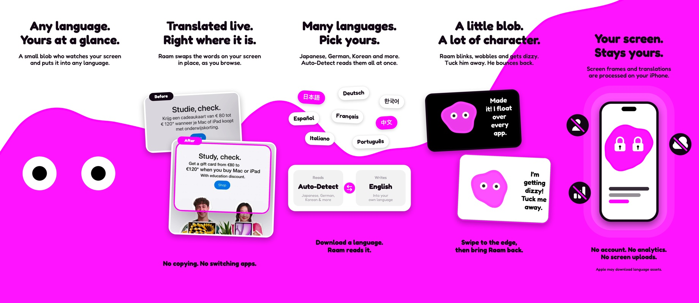
See the whole thing
A full, unedited walk-through: starting Raam, picking languages, and reading Spanish, Chinese, Japanese and Dutch apps.
A new pose for every build
Each version of Raam draws its own icon, so no two builds look alike. Here's every pose he's struck so far.
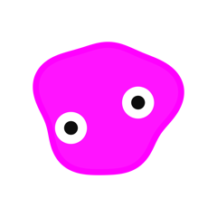
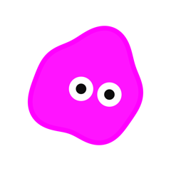
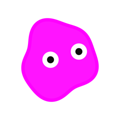
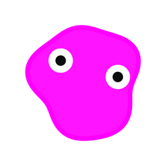
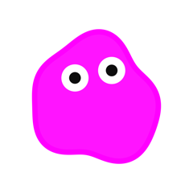
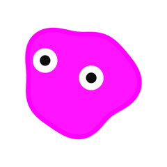
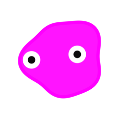
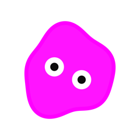
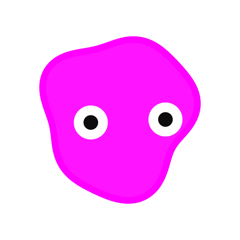
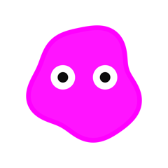
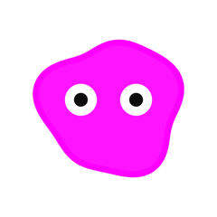
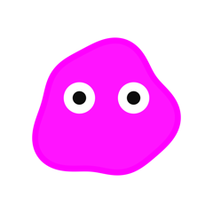
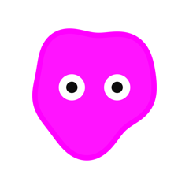
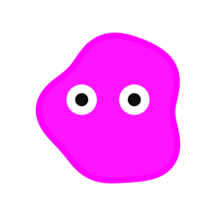
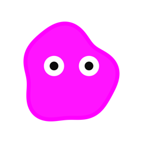
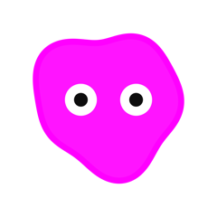
Try Raam before it's everywhere
In the beta, purchases are free, so you can try Raam Unlimited too, and help shape what Raam reads next.
Join the beta on TestFlight